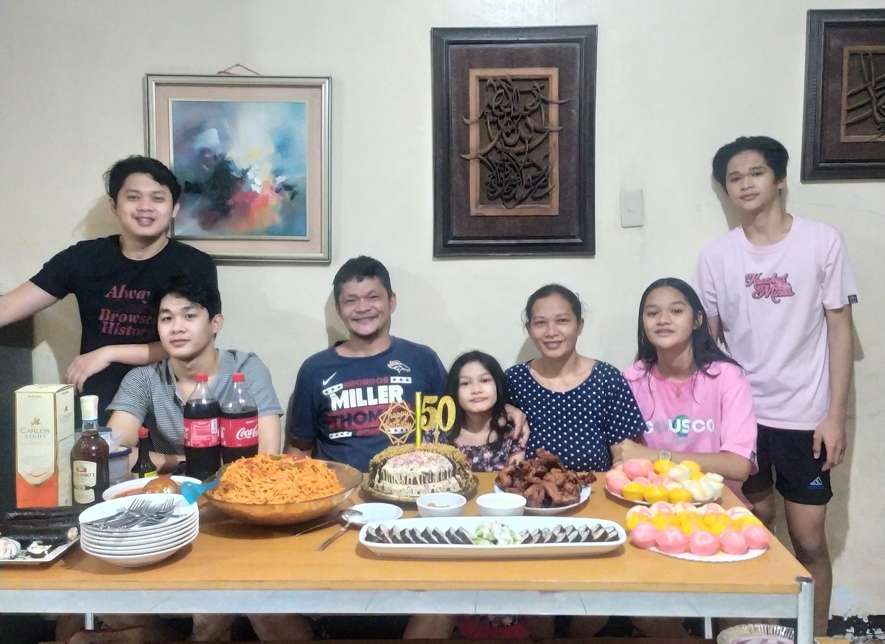
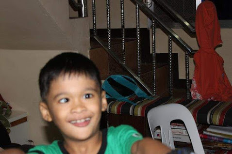
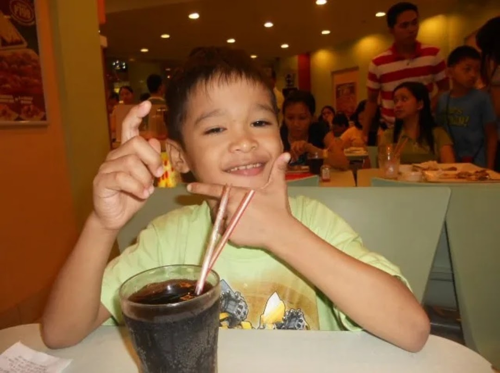
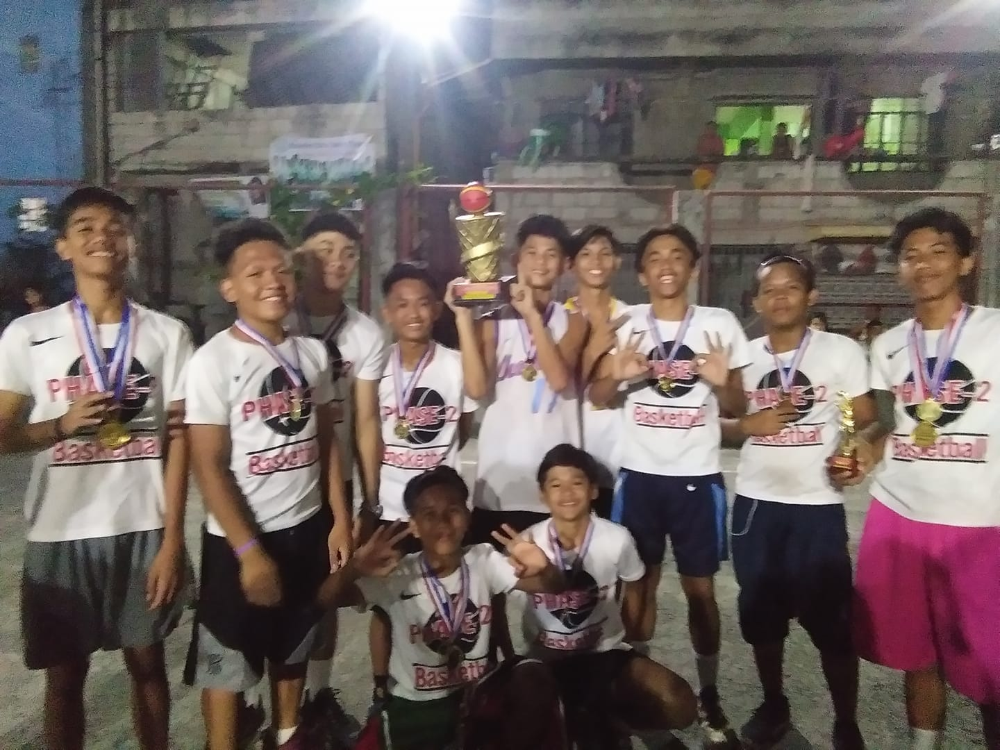
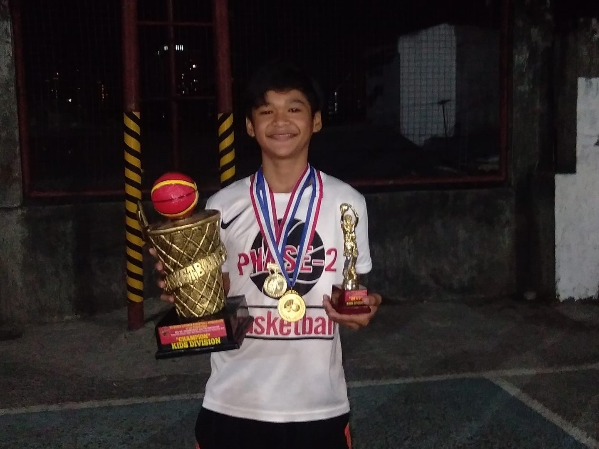

ABOUT ME
STUDENT | CCIS
This is me in my early years, I was always a happy child who interacted with others, especially when it came to sports like basketball and other street games.
My family has always been by my side through ups and downs, serving as a source of support and invaluable life lessons,consists of four siblings.
my parents, our family unit is further enriched by the presence of our beloved pet dog, who is no less than a cherished member of our household.
Within each family member, I find my greatest strength. My mother stands as my pillar of support, ever ready to lend a comforting shoulder when I need someone to lean on.
My father is a man of quiet strength who always puts our family's needs before of his personal problems. He has taught me the true meaning of resilience and strength through his actions.
Even our loyal buddy dog, who has taught me the true meaning of loyalty, has added to the lessons I've learned in life. His presence always makes me feel better and provides comfort when I'm feeling down.
My family has done so much for me, and for that I will always be grateful. Their combined efforts have produced an environment of safety in our house, which has allowed me to achieve success.


I was a humorous kid. My friend and I joked around. As long as we were with one another. I always enjoyed in it and was joyful for every event that occurred around.
As I navigated through my childhood, the joy of engaging in various sports, particularly basketball and street games. I was not only an active participant but also a source of humor among my friends.
Those were the days of carefree laughter and endless jokes, especially when my closest companion and I teamed up.Together, we created a bond that went beyond the confines of the basketball court or the neighborhood street.
Whether we were engaged in friendly competitions or simply sharing moments, those experiences became the building blocks of my early identity.
The simple joy of being surrounded by friends and sharing in their laughter created a sense of fulfillment that remained in my memories.


When I think back on those years, I see how those carefree times shaped who I am now. Embracing humor in the face of challenges,
appreciating the connections developed through common experiences, and finding joy in everyday interactions have all become essential traits of my personality.
I can't help but be proud of the journey that started during those joyful years when I look back. It was a moment when thinking ahead to things like attending college seemed far off.
Rather, focus was on the here and now, the relationships that were formed, and the pure joy of being alive and surrounded by friends who helped to make every moment special.
Those early years, filled with laughter, sportsmanship, and genuine connections, laid the groundwork for the person I am proud to be today.
The essence of those moments continues to shape my outlook on life, reminding me to find joy in the simple things and treasure the relationships that add richness to my journey.